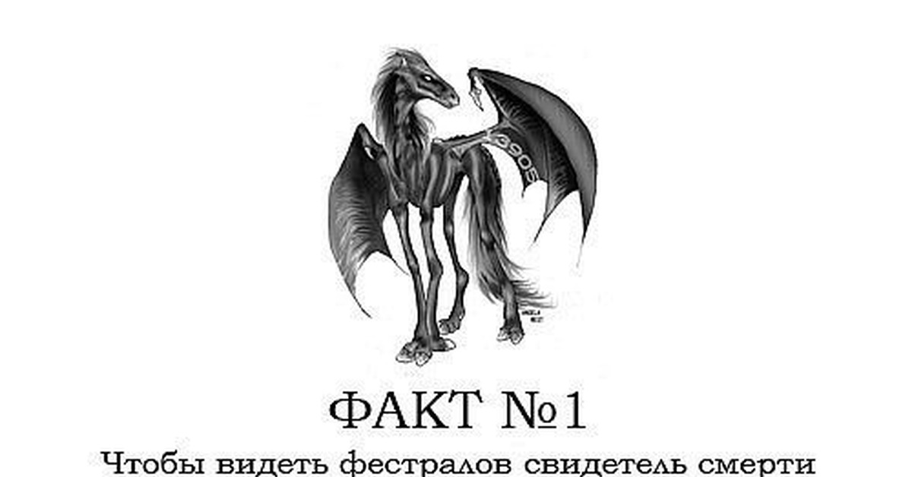

3. Какое заклинание используется для осветления палочки?
4. Сколько курсов учатся в Хогватсе?
5. Как звали крестного отца Гарри?
Информация о фильмах!
Интересные факты о фильме

Главная отличительная особенность фестралов в том, что их может видеть только человек, познавший смерть; для других людей они остаются невидимыми. .Аналогичное свойство имеет знаменитая Арка Смерти в Комнате смерти Отдела Тайн Министерства магии, только из-за её занавеса познавшие смерть слышат едва уловимый шёпот.
Кингсли Брустер был назначен временным Министром магиию после сохранил за собой эту должность уже на постоянной основе
После поражения Воландеморта все упивающиеся, кроме Малфоев, были убиты или заключены в Азкабан.